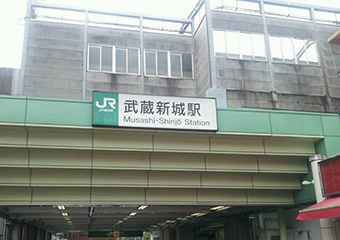
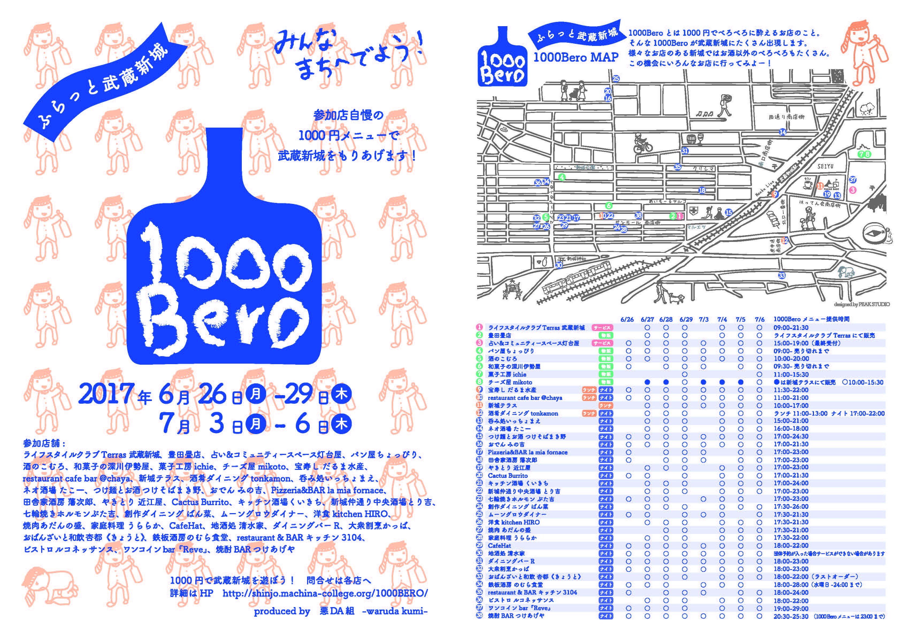
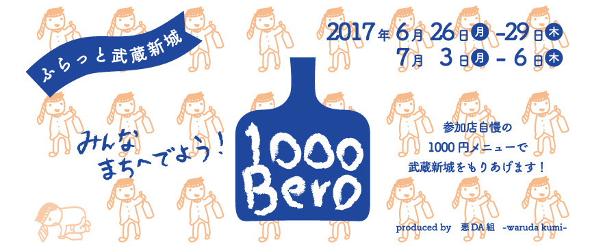

溝の口で開催して好評だった1000BEROを武蔵新城で開催しよう！と集まった飲食店が開催する、街を挙げての本気の呑み歩きイベントです。
「1000円でベロベロになるお店」の俗称である1000BEROからの派生イベントなので、本来は飲食店限定イベントですが、
いろいろなお店のある新城だからベロベロになれなくても楽しめればオッケー！
新城だからこそ、多種多様なお店が1000円でご満足いただけるメニューをご用意してみなさまのご来店をお待ちしています。
<開催日>
2017.6.26～29、7.3～6の8日間
<開催内容>
各店自慢の1000円（税込）メニューを考案し開催期間中提供します。
売り切れ御免でご容赦ください。
<フライヤー> フライヤーのダウンロードはこちら→★

